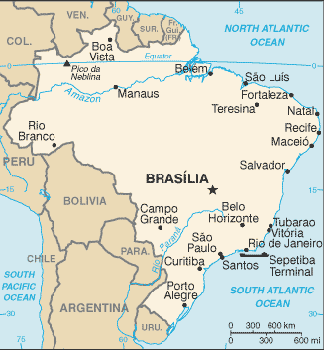

Fünftgrößtes Land der Welt: Brasilien
Wo die Regenwälder rauschen
Brasiliens Landschaft ist von ausgedehnten tropischen Regenwäldern des Amazonas-Tieflands im Norden und Hochebenen, Hügeln und Gebirgen im Süden geprägt. Während die landwirtschaftliche Basis des Landes im Süden und in den Savannengebieten des Mittelwestens (Cerrado) liegt, lebt der Großteil der Bevölkerung in der Nähe der Atlantikküste, wo sich auch fast alle Großstädte befinden.
Die größten Städte Brasiliens:
- Sao Paulo
- Rio de Janeiro
- Salvador da Bahia

Zurück